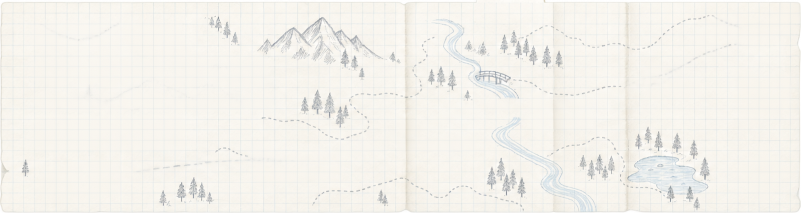
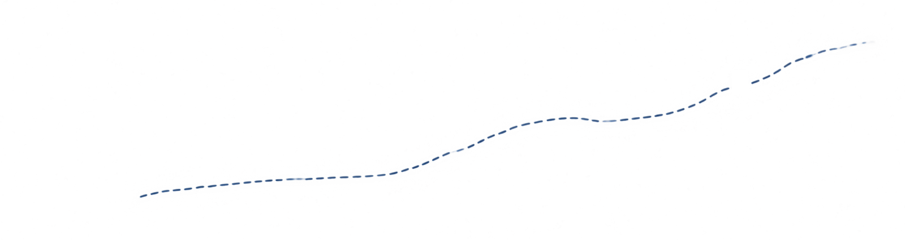
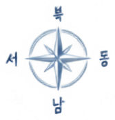

- ① 직무 알아보기
- ② 공고 살펴보기
- ③ 서류 준비
- ④ 지원하기
어떤 길로 가 볼까요?
마감 임박 채용 공고
채용 공고 더 보기 →- D-7모눈랩
프론트엔드 개발자
개발 - D-5여백스튜디오
주니어 프로덕트 디자이너
디자인 - D-3다음페이지
콘텐츠 마케터
마케팅
자주 묻는 질문
더 보기 →희망 직무를 아직 정하지 못했어요.
괜찮아요. 좋아했던 일과 잘했던 경험부터 적어 보고, 직무 사전에서 비슷한 일을 찾아봐요.
관련 경험이 없어도 지원할 수 있나요?
네. 작은 개인 프로젝트나 수업 과제도 경험이 돼요. 무엇을 배웠는지 한 줄로 정리해 보세요.